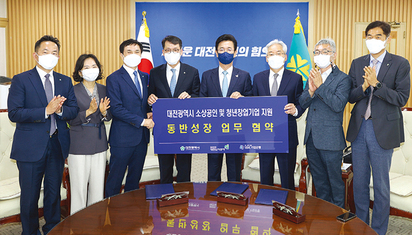

인천시설공단은 2002년 공공 시설물의 효율적인 관리 운영과 시민 복리 증진에 기여하기 위하여 설립된 지방공기업이다. ‘시민과 함께 사회적 가치를 실현하는 전문 공기업’이라는 비전을 실현하기 위하여 2019년부터는 시민 참여 주도의 경영 선포와 함께 단순 시설 관리(하드웨어적 관점)에서 벗어나 시민이 체감하도록 공공시설 서비스를 제공할 수 있는 시설을 운영(소프트웨어적 관점)하기 위하여 자체적으로 경영혁신 플랫폼을 구축·운영하고 있다.
글 강신희(인천시설공단 혁신기획실 대리)
중장기 경영혁신 플랫폼 구축・운영
인천시설공단(이하 공단)은 정부의 혁신 트렌드에 맞춰 지방공기업으로서 공단의 체계적인 혁신 추진을 위하여 중장기 ‘경영혁신 플랫폼’을 구축・운영해왔다. 공단은 2019년에 내부의 경영혁신 플랫폼인 「Triple C」를 통해 △업무 프로세스 개선(Change), △불필요한 업무 없애기(Cut), △업무 명확화(Clear) 추진으로 상향식(Bottom-up) 혁신을 통한 시민과 함께하는 혁신을 추진할 수 있는 기반을 마련하였다.
이를 바탕으로 2020년에는 내부뿐만 아니라 외부의 참여를 높이기 위하여 시민 참여 경영을 선포하고 혁신 플랫폼인 「Triple I」를 런칭하였다. 「Triple I」는 공단의 정책에 △시민의 참신한 의견을 반영(Idea), △시민과 함께 시설물과 서비스를 개선(Improve), △시민이 원하는 예산 사업을 발굴하여 사용하는 시민 참여 예산(Invest)으로 구성된 혁신 플랫폼이다.
2021년 현재는 내부와 외부의 혁신 역량을 결집하여 지속가능한 경영혁신을 위한 「Triple S」를 통해 시민 참여와 협업 사업을 활성화하는 혁신 플랫폼을 구축하였다. 이 플랫폼은 △사회적 가치 창출의 기반을 조성하는 나눔공유(Share), △시민이 공감하고 체감하는 일하는 방식의 혁신을 위한 학습조직의 기반을 조성해 학습연구(Study)를 추진하고 있다. 또한 이를 기반으로 △지속가능한 우수 혁신 성과를 창출할 수 있는 시스템(Superior)을 갖추어 경쟁 우위의 기반을 조성하기 위한 노력을 해 나가고 있다.
2020년은 지방공기업들에게 도전과 변화의 시기였다. 코로나19의 갑작스러운 확산에 따라 달라진 일상으로 지방공기업도 빠르게 적응해야 했다. 공단이 자체적으로 구축한 「Triple I」는 단일 추진 사업이 아닌 플랫폼 사업이었기 때문에 상황에 따라 유연하게 적용하여 위기 상황에서 빛을 발했다.
단일 사업 추진 시에는 상황에 따라 취소되거나 추진이 어려울 수 있지만 플랫폼 사업은 ‘플랫폼’의 성격상1) 혁신을 추진하는 도구(Tool)를 제공하는 시스템이기 때문에 코로나19의 확산기에도 단계적인 일상 회복 이후의 위드 코로나, 포스트 코로나 시대에도 다양한 과제를 발굴하고 성과를 창출할 수 있다.
[그림 1] 2019~2021 인천시설공단의 경영혁신 플랫폼
[그림 2] 2020 시민 참여 경영혁신 플랫폼「Triple I」의 구성도

[그림 3] 온라인 성묘 시스템의 이용 현황
[그림 4] 영종진공원의 숲속쉼터 산책로 코스
① Idea: 전국 최초로 인천가족공원에 「온라인 성묘 시스템」 도입
코로나19로 집단감염 우려가 있는 명절 기간에 성묘객의 몰림 문제를 해결하기 위하여 기존의 디지털 기술을 융합해 독창적인 디지털 온라인 서비스를 창출하였다. 이 시스템을 도입하기 위한 출발점에도 ‘시민’이 있었고 아이디어를 실행해 가는 과정에도 ‘시민’이 함께 참여하였다. 시민이 적극적으로 참여한 결과, ’20년 인천시 코로나19 대응 만족도 조사2)에서 만족도 1위 사업으로 평가받았다.
공단이 최초로 시범적으로 도입한 이 온라인 성묘 시스템은 전국의 「온라인 성묘」 서비스의 표준 모델을 제공하는 한편, ’21년 추석 명절에 60,000명의 비대면 성묘객이 이용하면서 코로나19 확산 예방에도 기여하였다.
2020년에 이 시스템을 이용한 시민을 대상으로 한 만족도 조사 결과에 따라 시민이 원하는 서비스의 개선사항을 반영하고자 예산 편성 시에 시민이 참여하였다. 이에 2021년에는 373백만 원의 예산을 수립하기도 하는 등 시민 의견(Idea) 과제가 차년도의 시민 참여 예산(Invest) 과제로 이어지는 선순환을 보여주었다.
이를 통해 온라인 성묘 시스템은 3A(Always, Anywhere, Anyone)를 지향하는 대시민 서비스 제공을 목표로 하여 기존에 제공하였던 성묘 가는 길(VR), 추모의 글, 봉안함·영정사진·헌화대 꽃 표출, 차례상 차리기 등 고객 선택의 폭을 넓힌 맞춤형(Do-It-Yourself) 콘텐츠들의 그래픽을 고도화하여 현실감을 부여했으며, 합장 차례상 및 지역별 차례 음식·종교별 배경화면 등 선택형 콘텐츠를 다양화하여 고객 만족을 높이기 위해 지속적으로 노력하고 있다.
② Improve: 시민이 만드는 도시 공원
공단이 관리하는 공원시설은 2020년에 제작된 시민 참여 혁신 플랫폼인 「Triple I」를 통해 시민과 함께 많은 변화를 만들어내며 인천시의 대표적인 도시 공원으로 탈바꿈하였다.
청라공원에서는 카라반, 화물차 등 장기주차 관련 민원 해소 및 주차공간 부족 문제를 해결하고 시민의 편의성 증진을 위해 대형주차 65면을 10면 외에는 소형주차장으로 전환하였다. 이를 통해 장애인 배려 주차공간을 포함한 소형 주차 공간으로 118면을 만들어 제공하고 있다. 이외에도 시민들의 볼거리 조성에 대한 요청에 따라 포토존, 전망데크 등을 조성하는 한편 음악분수 연출곡, 신규공간 조성사업 명칭 공모 등 시민과 함께 공원을 운영하고 있다.
한편 씨사이드파크 영종진공원에는 시민들의 코로나 블루 극복을 위한 야외 산책로를 조성하면서 산책로를 꾸밀 재료를 설문 조사하여 조성한 솔잎길 산책로를 포함해 A~E코스까지 다채로운 볼거리가 있는 숲속쉼터를 조성하였다.
③ Invest: 인천 시민 300만 명과 조성한 커뮤니티센터
공단은 관리하는 시설 내의 유휴공간을 적극적으로 발굴하고 시민의 커뮤니티를 위한 공간으로 조성하는 「커뮤니티센터」 사업을 2019년부터 해오고 있다. 2020년에는 5개 부서가 자발적으로 참여해 사업을 추진하였고, 현재는 10개 부서가 추가되어 커뮤니티센터는 양적으로 성장하였다. 한편 CEO와 임직원들이 2019년 시범적으로 도입한 부서의 성공 사례를 기반으로 공동연구한
<지방공기업 커뮤니티센터 모델 연구> 논문을 한국지방공기업학회 학술지에 게재하여 질적 성장을 이루었다.
뿐만 아니라 2020년에는 코로나19로 인하여 시민 주도로 지역사회 현안을 발굴하고 해결하는 활동을 지원하는 「시민 주도 리빙랩(Living Lab)」이 커뮤니티센터에 도입되어 높은 수준의 시민 참여를 이끌어 내는 시기가 되었다.
[그림 5] 시민 주도 리빙랩(Living Lab)의 주요 추진 내용
1)
플랫폼이란 특정 시스템 등을 구성하는 기초가 되는 틀, 골격 등을 의미하는 것으로, 구글, 애플, 페이스북, 아마존 등도 비즈니스 플랫폼을 제공하는 사업을 하고 있다.
2)
19세 이상의 인천시민 1,038명에게 설문 조사 실시
인천시설공단 김영분 이사장
“혁신 플랫폼은 하나의 단위 사업이 아니라 시스템입니다.
그러다 보니 코로나19와 같은 예상하지 못한 어려움이 닥쳤을 때에도 유연하게 적용할 수 있었고,
어려운 시기에서도 시민이 공감하고 체감하는 성과를 지속적으로 창출할 수 있었습니다.
앞으로도 인천시설공단은 시민들에게 위안과 힘이 될 수 있는 혁신 성과를 창출하여
코로나19로 어려운 시기를 300만 인천 시민과 함께 극복하고자 노력하겠습니다.”